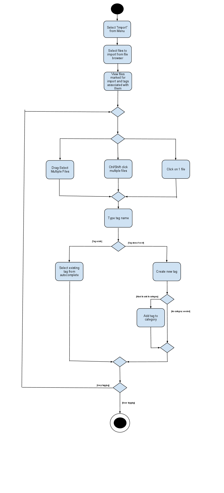

Overview:
Our application, Biblio, is a tag based file organizer. The application addresses the problem of a collection (such as a Downloads directory) filled with unread, unidentifiable articles with cryptic filenames. The application allows the user to filter through files by tag or by direct text search. Applying a many to many relationship between tags and files is a more natural organizational system than a restricted directory hierarchy, which forces the user to pick a single file attribute to organize by. The application focuses on PDF and other text based file formats, but can handle all file formats. It provides a minimal, lightweight interface for reading and interacting with these text based files. These interactions include bookmarking a location in the file, adding notes to a file, and a tabbed and muli-windowed reading interface.
Domain Model:
Tags form a directed graph, with an edge representing that the destination tag node is a subset of the source node. This indicates that tagging something with the destination node implicitly tags it with the source node, such that when the user filters her files based on the parent tag, all files tagged with all the children's tags will be selected as well. A single tag is an object, uniquely identified by a single line of text.
Tags can be placed into categories. A tag may be in multiple categories. There are no relationships between categories, they are simply sets of tags, named with a single line of text. A user may filter files by category, which is the equivalent of selecting all files in the union of the files each tag in the category has tagged. A category is uniquely identified by a single line of text.
A bookmark is a location in a file. A bookmark may have tags (e.g. for keeping track of a study session). This does not imply that the file the bookmark is located in also has that tag. When filtering by tag, bookmarks and files will be returned, but the bookmarks will be differentiated (put in a lower section, highlighted with a different color, or something along those lines).
A note is a piece of text associated with a file or bookmark. A file or bookmark may have many notes.
A file is the familiar entity actually on disk. It will be encapsulated along with some metadata in an object. A file has a (possibly empty) set of tags. Other metadata include date last opened, date imported, etc.
Actors:
The user. This is a personal, desktop application.
Core Features
- Display text file(s) in integrated view (serve as file reader)
- Locate a file
o Filter by tag - only display files tagged with selected tags
- choose from the list of tags in search tab
- choose from the list of matching tags that pops up after search by tag text
o Search by tag text
- return all associated tags
o Display filter/Search result as preview of 1st page/cover of text files
- Import file(s)
o Import one or multiple files to the library
o Set the library directory
- use the default folder
- choose a folder
o Import options:
- Copy file to the library
- Move the file to the library
- Track the file (save link to file), but leave it in place
- Tag file in the library
o Tag with existing tag(s)
- Suggested tags
- Implicitly tag with all parent tags
o Create new tag(s), prompt for:
- name of tag
- association
- Manage tags library
o Create/delete tags
o Edit tags
- Rename
- Associate tags
- Bookmark a location in a single file
- Associate tags
- Data about # of times a file has been opened, last used date
Important Features
Extra Features
- Support reading file formats other than PDF
o E-books (e.g. MOBI, EPUB), text files (.odt, .txt)
- Music, video
- Integrate with RSS feeds / subscriptions
- Suggest tags when importing
o depends on file type
o ex1. PDF file: author, publish date, etc.
o ex2. Music file: artist, album, release date, etc.
o if not tagged after importing, automatically tagged as "untagged"
o Suggest based on clustering
- Full text search
o search within a tag category (author: title: etc.)
- Directory watcher to automatically import all files added to a specified directory
- Display usage information
o Most searched tags
o Recent searches
o Recent files
- Restore last session
- GUI
o search panel
- pop in as tab
- hide to the side
- Tag bookmarks
- Attach note(s) to a bookmark or file
- Undo operation
- A detailed tutorial (with videos and screenshots) demonstrating use of many of the "invisible" actions a user can take
GUI Sketches:
Import Dialog
Upon selecting "Import" from a menu or using a keyboard shortcut, the standard Java file selector will be displayed. When the user confirms his or her selection, those files are diplayed in this window. Tags that are entered in the text field at the lower left are applied to all selected files when the "Apply" button is pressed. The radio buttons beneath each file determine whether the file is moved to our central store, copied to the store, or if the application simply references the existing file in place.
Full window search
Searching by tag. Full text search is done by selecing the "Full Text" radio button. The documents that match the current search criteria are shown in the panel on the right. Right-clicking on the previews opens the same right click menu that appears when viewing the full document.
Document Reader
The integrated PDF reader. Right-clicking brings up a contextual menu that allows the user to add tags, bookmarks, or examine the properties of that document. The last item, "Open with..." opens the document using the application of the user's choice. The search panel on the right pops in and out by pressing the triangle button at the upper right of the panel. The files that match the current search criteria appear in the sub-panel at the bottom of the search panel.
Properties Window

When the user selects properties from the right click menu, this window appears.
Tags Editor
The dialog that lets the user add and edit tags and categories.
Tags that should be implied by this tag are added in the middle panel.
In this example, "SQL" is the currently selected tag, so the
fields on to the right of the list of tags modify the "SQL"
tag.
Searches for "Databases" should find things
tagged with "SQL," so we say that the "SQL" is
associated with the "Databases" tag. This text field
behaves like an email-address field in that recognized names are
transformed into a single entity rather than a simple string of
characters.
The check boxes in the "Categories" table show which
categories this tag belongs to. In this case, the "SQL" tag
is not in either of the "Title" or "Author" categories.
Use Cases
Importing files
Pre-condition: The user has files on their computer that are not in the applications library
Goal: The application has the files with their respective tags in the library
- User selects "Import..." from options menu
- Application opens a file browser dialog box.
- User enters file path name(s)
o If user doesn't know path, they can browse to its location and select by left click
- They can select multiple files in same directory
- User selects whether they want to move the file to the library or leave it in place
- The application determines whether this is a file that the application can read (initially just PDF)
.- The application prompts the user to tag the file(s)
- Once the user is done tagging (see tagging use case for more explanation) the library is displayed with new files highlighted
Edit a tag
Pre-condition: The user wants to change the state of the tags
Goal: The user has edited or deleted the tags they wanted to
- User right clicks on tag
o Can select edit tags from menu
- Tag menu appears. This has "Edit," "View Files" etc.
- User selects Edit option
- Editing options are: "Delete," "Associate with another tag," etc.
- User edits tag
- Selects OK on menu to finish
o Can also select cancel to cancel operation
Create tag
Pre-condition: The user wants to add a tag to the library
Goal: The user has created the tag and placed it into the categories they want
- User selects "Create tag..." from a menu
- Application opens create tag dialog
- Users enters tag metadata (name, tags that it associated with, category it belongs to)
- User tags files with new tag
Tag a file
Pre-condition: The user wants to further organize their library by adding tags to files
Goal: The selected files now have the new tags associated with them
- User select one or multiple files in file navigator panel
- User right clicks on them and selects "add tag."
- A dialog window pops up
- User searches for tags by name or creates a new tag
- User select one or multiple tags
- Application tag the selected files with the selected tags
- User keeps editing until they press "OK."
o User can press "Cancel" in which case all of their changes will be rolled back
- Application closes the dialog window
"Watch a directory" for added files (e.g. Downloads folder)
Pre-condition: The user wants to automatically import all files added to a particular directory
Goal: The application now automatically imports all new files in that directory
- User chooses "Watch a directory" from the menu
- Program creates a directory navigator dialog
- User navigates through file system and chooses a folder
- Program adds a new listener (OS dependent) to monitor that folder
o Alternate implementation: Application checks directory on startup and at regular intervals while running
Add a note
Pre-condition: User wants to annotate file with personal notes
Goal: There is now user entered text associated with that file
- User selects a file
- User right clicks and selects "Add a Note" option
- A plain text editor tab opens and allow user to write comments
- User save the comments
- Program associates the note with the file
Get info about a file
Pre-condition: The user wants to know the metadata associated with a file
Goal: The user has found the information they are looking for
- User right clicks on a file
- User chooses "Properties" entry from right click menu
- A window will show up with all the info about the chosen file (tags it has been tagged with, last modified date, import date, number of times viewed through application)
Get info about a tag
Pre-condition: The user wants to know information about a tag
Goal: The user has gotten the information they need
- User right clicks a tag
- User chooses "Properties" from right click menu
- A window will show up with all the info about the chosen tag (tag name, tag hierarchy, number of file tagged with it, list of files with this tag, date created, categories it is in)
Text Search
Pre-condition: The user wants to search for files based on their textual content
Goal: The user sees a list of files containg the search term in their text
- User clicks in search bar
- User selects radio button saying "Full Text Search" (as opposed to search for tags)
- User types in search term
- Program displays a list of files
- When the user selects one of these files to view, the search term is highlighted throughout the document
Search for a tag
Pre-condition: User wants to find a tag based on its name
Goal: User has found the tag they are looking for
- User clicks in search bar
- User selects radio button saying "Search Tags" (as opposed to "Full Text Search")
- User types a tag name
o Program will autocomplete with possible tags matching the term typed so far as the user types, similar to the way email clients suggest addresses as they are being typed.
- Program displays a list of tags matching that search term
Filter by tag
Pre-condition: The user
wants to see only files tagged with certain tags
Goal: User sees subset of files based on the tags they selected
- User searches for and finds the desired tags
- User checks the boxes to the left of each tag name
- Program displays files matching ALL of the tags selected (it is an intersection of the tags selected, not a union).
Read a pdf
Pre-condition: User wants to view a PDF file
Goal: The user can read and annotate the opened file
- User double clicks on a pdf file in the library
o They can also right click and select "Open" from the right click menu
- Program displays the pdf in a new tab
Bookmark a file
Pre-condition: The user wants to save a particular spot in a file they are reading
Goal: The user has saved the spot with enough contextual information for them to find it again easily
- User right clicks on the pdf they are viewing
- User selects "Bookmark current page" from right click menu
- A bookmark dialog pops up
- User enters name and optionally tags the bookmark
- Program adds the file into a bookmark list which is viewable from a menu on the menubar
Architecture:
The application is a single-user desktop application. Our application will use Hibernate and SQLite for persistently storing data and managing it.
Resources:
We plan to use the Java programming language and Swing for the GUI. We will examine the file types with with a MIME type utility library such as mime-util or JMimeMagic (see here for some details) to determine file type. We will use Eclipse for Java development. We will use git and github for version control. The private repository is at https://github.com/dcrankshaw/OOSE-Project.